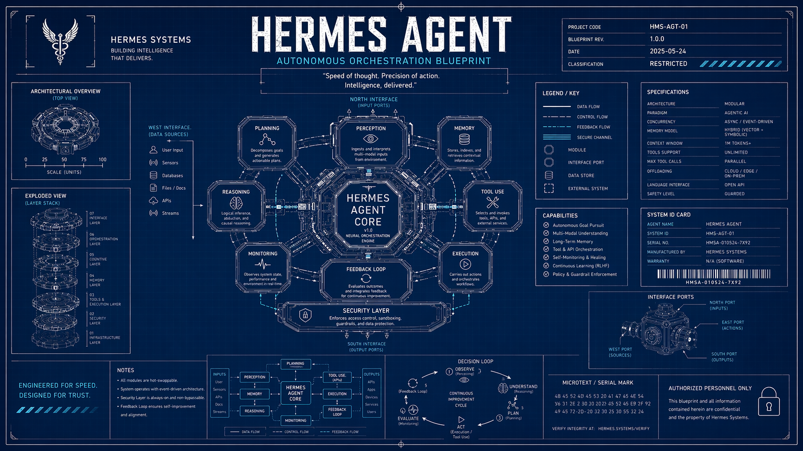
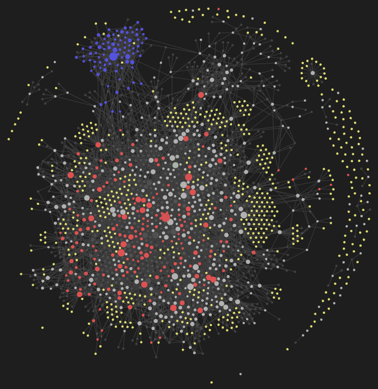
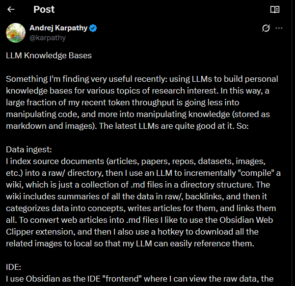
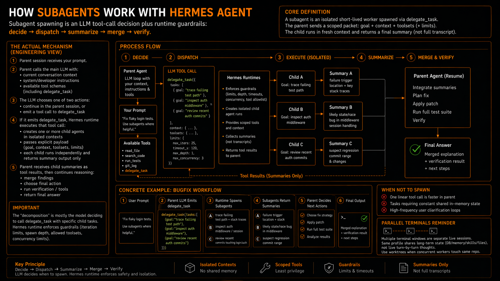

[01] START HERE
Self-Sovereign AI
You control the model, the infrastructure, and the data path.
WHAT IT MEANS
- • your prompts/files don’t disappear into random third-party logs
- • you pick where workloads run: your machine, your VPS, or a trusted provider
- • you can audit and change the stack when policy or risk changes
HOSTING OPTIONS
- • self-hosted: Mac Mini, Windows box, or old spare machine
- • private VPS in a jurisdiction you trust (ex: Germany)
- • privacy-first model providers (ex: Venice AI) on your own infra
Why this matters: fewer data leaks, stronger compliance posture, and real ownership of your AI workflow.
What Hermes Actually Is
NOT JUST CHAT
- • not “prompt in / answer out” only
- • not reset-to-zero every session
- • not limited to one interface
AGENT RUNTIME
- • webhook support (event-driven triggers from external systems)
- • tools (terminal, files, web, browser, code)
- • persistent memory + reusable skills
- • CLI + Telegram/Discord/Slack + cron
Setup in 3 Minutes
COMMAND FLOW
curl -fsSL ...install.sh | bash hermes setup hermes model hermes doctor hermes
KEY PATHS
- • ~/.hermes/config.yaml (settings)
- • ~/.hermes/.env (keys)
- • ~/.hermes/skills/ (procedures)
- • ~/.hermes/sessions/ (history)
Fast setup. Harden later.


Native Memory + History DB
Yes — Hermes has a DB. ~/.hermes/state.db stores chat history, while file memory stores durable facts.
BUILT-IN STORES (FILES)
- • ~/.hermes/memories/MEMORY.md → environment + conventions
- • ~/.hermes/memories/USER.md → user preferences/profile
- • updates happen through the memory tool (add/replace/remove)
INJECTION MODEL
- • loaded once at session start as frozen prompt blocks
- • writes are durable immediately, but refresh next session
- • keeps prompt caching stable and predictable
DEFAULT: NOT VECTOR RAG
Default retrieval is file snapshots + SQLite FTS recall, not always-on embeddings.
EXTENSIONS
You can attach external memory providers (e.g. Honcho/Mem0/Hindsight) for richer retrieval, but that is optional.
WHEN FILE MEMORY IS USED
- • injected at start of every session (baseline context)
- • use for stable facts: preferences, conventions, environment quirks
- • write via memory tool when fact should persist broadly
WHEN DB HISTORY IS USED
- • ~/.hermes/state.db stores full sessions/messages automatically
- • queried on demand via session_search (not auto-injected every turn)
- • use when user asks “what did we do before?” or references past work
DECISION RULE
Always-needed, stable truth → file memory. Historical details tied to old chats → state.db recall.
RAG vs No-RAG: When To Use Extensions
Both are valid. Pick based on scale and recall quality needs, not hype.
NO-RAG (DEFAULT)
- • best for personal assistants + small teams
- • works from file memory + chat history DB (FTS5)
- • easier to audit, cheaper to run, less maintenance
- • choose this when data size is manageable
RAG / VECTOR EXTENSION
- • best for employee knowledge across large document sets
- • helps when users ask fuzzy/synonym-heavy questions
- • better recall at scale, but more infra + tuning
- • choose this when keyword recall starts missing answers
FOR INDIVIDUALS
Start no-RAG. Add vector search only if your notes/docs grow large and retrieval quality drops.
FOR EMPLOYEE WORKFLOWS
If many teams need consistent answers across scattered docs, enable a vector memory extension early.
ONE-LINE DECISION RULE
If your team says “we have the docs but can’t find the answer fast,” enable vector-search extensions.
What Is LLM Wiki + Obsidian?
Agent builds and maintains the knowledge graph; humans browse/edit it in Obsidian.
WORKS AS A TWO-LAYER SYSTEM
- • LLM Wiki: compiles sources into linked markdown pages
- • keeps SCHEMA.md, index.md, log.md consistent
- • runs ingest + lint so knowledge stays current over time
- • Obsidian: graph/backlinks/edit UX on the exact same files

Obsidian view of the same wiki as a human-friendly second-brain interface.
ORIGIN / INSPIRATION

Karpathy tweet introducing the LLM Wiki pattern.
Obsidian Integration (Native + Our Build)
NATIVE HERMES SUPPORT
- • built-in obsidian skill (read/search/create notes)
- • wiki markdown works as Obsidian vault out of the box
- • keep OBSIDIAN_VAULT_PATH=~/wiki for shared path
- • sync with ob sync --path ~/wiki
WHAT WE RECOMMEND ON TOP
- • set ~/wiki as vault
- • agent curates markdown, Obsidian visualizes it
- • regular maintenance (ingest/lint/update)
- • mirror Hermes local profile snapshots into wiki notes
- • only sync when content changed (low-noise no-op)
How To Do This Yourself
2) INITIALIZE WIKI WITH LLM-WIKI
Prompt: "Use the llm-wiki skill. Initialize ~/wiki and create SCHEMA.md, index.md, log.md, plus raw/entities/concepts/comparisons/queries."
3) CONNECT OBSIDIAN SYNC
Prompt: "Use the obsidian skill. Set OBSIDIAN_VAULT_PATH=~/wiki, run ob sync-setup, verify status, then run one sync."
4) SCHEDULE MAINTENANCE
Prompt: "Create cron jobs: ingest every 2h, lint daily at 09:00, sync every 30m with ob sync --path ~/wiki. Return job IDs."
5) PROFILE SNAPSHOT MIRROR
Prompt: "Use mirror-hermes-local-to-obsidian. Mirror ~/.hermes/SOUL.md and ~/.hermes/memories/USER.md into ~/wiki/hermes/ notes when changed."
6) NO-OP SILENT MODE
Prompt: "For all scheduled wiki jobs: if no content changed, return exactly [SILENT], skip log append, and skip sync."
From prompts to a compounding agent system.
Self-Improvement Loop
Hermes improves by turning solved work into reusable operating knowledge.
1) EXECUTE + VERIFY
Solve a real task with tools, then verify output (tests, checks, validation).
2) EXTRACT PROCEDURE
If the flow is reusable, save it as a skill: trigger, steps, pitfalls, verification.
3) REUSE ON TRIGGER
Later, Hermes loads that skill in context and executes faster with fewer mistakes.
4) PATCH ON FAILURE
If the skill is stale, patch immediately so the next run is better than this run.
MEMORY VS SKILLS
- • Memory = stable facts (user preferences, environment quirks)
- • Skills = how-to playbooks (repeatable workflows)
COMPOUNDING EFFECT
Session N+1 starts from a stronger baseline than Session N.
Not just longer chat history. Actual operational learning.
Prompt → Result → Improvement
How Hermes decides whether an output becomes durable improvement.
1) PROMPT
User asks for outcome, constraints, and quality bar.
2) EXECUTION RESULT
Hermes runs tools, edits, tests, and verifies reality.
3) IMPROVEMENT GATE
Reusable? Stable? Verified? If no, stop. If yes, capture.
4) WRITE LEARNING
Add/patch skill + store durable facts in memory.
WHAT GETS WRITTEN
- • Custom skill when workflow repeats (triggers, steps, pitfalls, checks)
- • Skill patch when existing process is stale or wrong
- • Memory fact for stable preferences/environment conventions
Example custom skill: X bookmarks workflow — user asks for bookmarks in a specific format; Hermes imports/retrieves the export, detects field inconsistencies, normalizes the data, then outputs it in the exact structure the user prefers. That repeatable formatting pipeline gets saved as a custom skill.
WHAT DOESN'T
- • one-off outputs with no reuse value
- • unverified guesses or half-working hacks
- • temporary task progress (belongs in session history)
Short answer: yes, it’s mostly custom skills + targeted memory updates. Improvement is gated, not automatic logging.
How a Hermes Session Works
One session = one live working memory window. Think: one whiteboard with a token budget.
LIVE SESSION (SHORT-TERM)
- • each message adds context to the active window
- • token meter (ex: 45K/400K) shows how full that window is
- • near threshold, Hermes compresses older context instead of crashing
- • recent turns are protected; older turns get summarized
LONG-TERM (PERSISTS AFTER SESSION ENDS)
- • chat history in ~/.hermes/state.db
- • durable memory facts + user profile
- • skills and file changes
- • retrievable later via resume/session_search
WHAT RESETS A SESSION
- • /new or /clear
- • closing/reopening CLI and starting a new chat
- • explicit resume can bring prior session context back
PARALLEL + TELEGRAM BEHAVIOR
- • 4 terminals = 4 separate live session contexts
- • they do not share live chat state automatically
- • coordination happens via DB/memory/skills/files
- • Telegram runs in gateway service: separate live context, same long-term storage
- • closing this CLI does not kill Telegram if gateway service is still running
What Is a Ralph Loop?
A scripted fresh-session loop for building large projects story by story.
LOOP INPUTS
- • PRD.json defines project + stories
- • agent instruction .md defines coding rules/style
- • progress.txt tracks done vs next story
LOOP EXECUTION
- • launcher opens a fresh Codex/Claude session
- • agent reads rules + picks next unfinished story
- • implements + verifies + writes status to progress.txt
- • session closes, loop starts again for next story
WHY IT'S POWERFUL
Each story starts with clean context, but overall project state stays consistent through shared planning files.

Coding Workflow: Which Mode To Use?
Pick based on scope, repeatability, and context hygiene requirements.
WHEN TO USE RALPH LOOP
- • multi-story builds with clear roadmap
- • you want deterministic progress tracking
- • you want fresh context every story by design
CONTEXT BLOAT FACTOR: LOW
WHEN TO USE HERMES
- • recurring engineering work in same codebase
- • you benefit from tools + memory + skills compounding
- • you still run story-scoped sessions (not mega-chats)
CONTEXT BLOAT FACTOR: MEDIUM (LOW WITH DISCIPLINE)
WHEN TO USE CLAUDE/CODEX SEPARATELY
- • one-off tasks, spikes, or small surgical fixes
- • max focus with minimal orchestration overhead
- • fast fresh-loop execution beats setup complexity
CONTEXT BLOAT FACTOR: VERY LOW